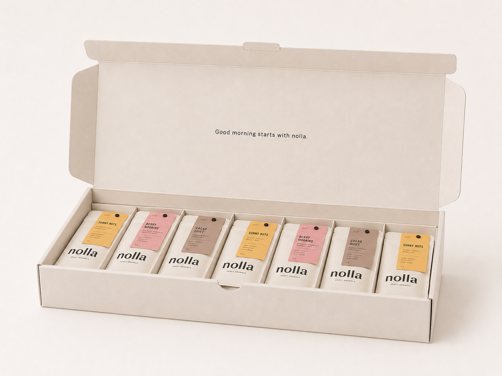
7 DAYS BREAKFAST BOX
1,980円（税込）
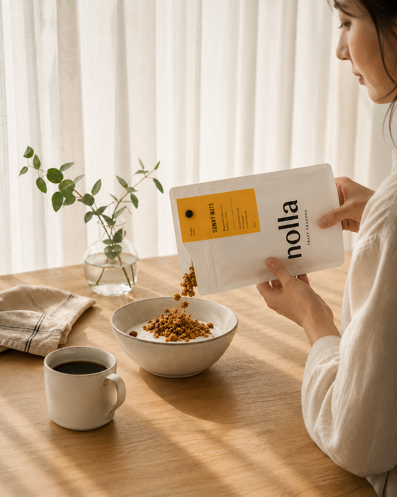
nolla CRAFT GRANOLA
3つの味を選びながら、
自分に合う朝食を7日間試せる
買い切りのクラフトグラノーラセット。

7 DAYS BREAKFAST BOX
1,980円（税込）
MORNING REALITY
目覚ましを止めても、まだ少し眠い。
着替えて、髪を整えたら、もう出かける時間。
朝食を考える余裕がなくて、今日もコーヒーだけ。
POINT 01
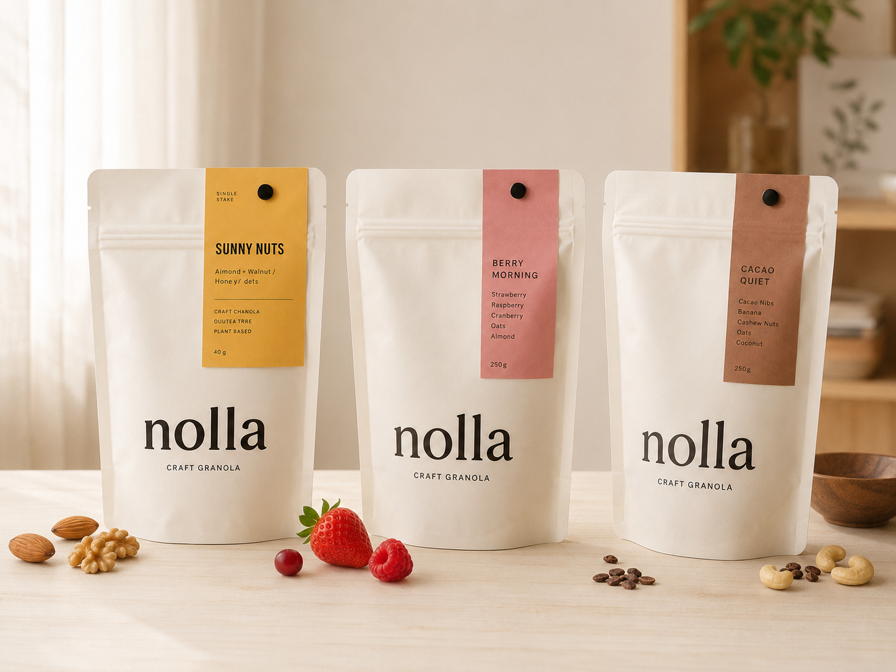
POINT 02
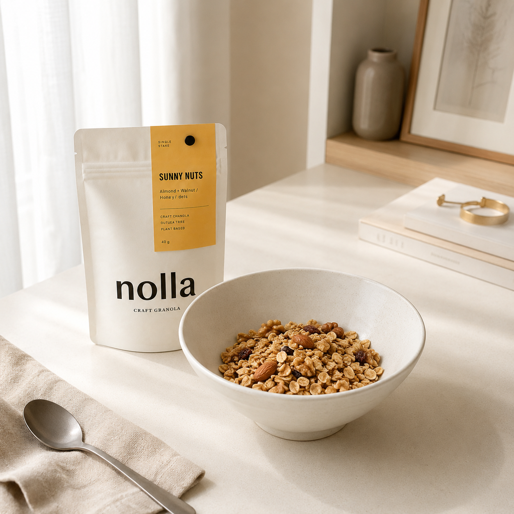
POINT 03
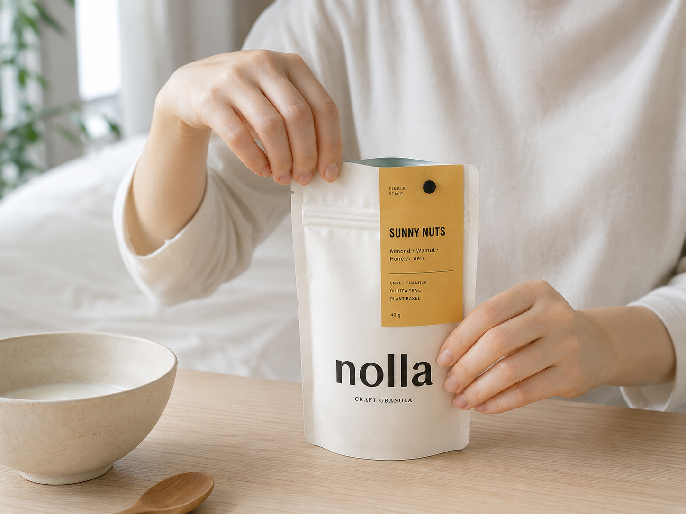
MORNING ROUTE
3つの質問に答えると、
今の朝におすすめの味が分かります。
QUESTION 1 / 3
YOUR FLAVOR
YOUR MORNING FLAVOR
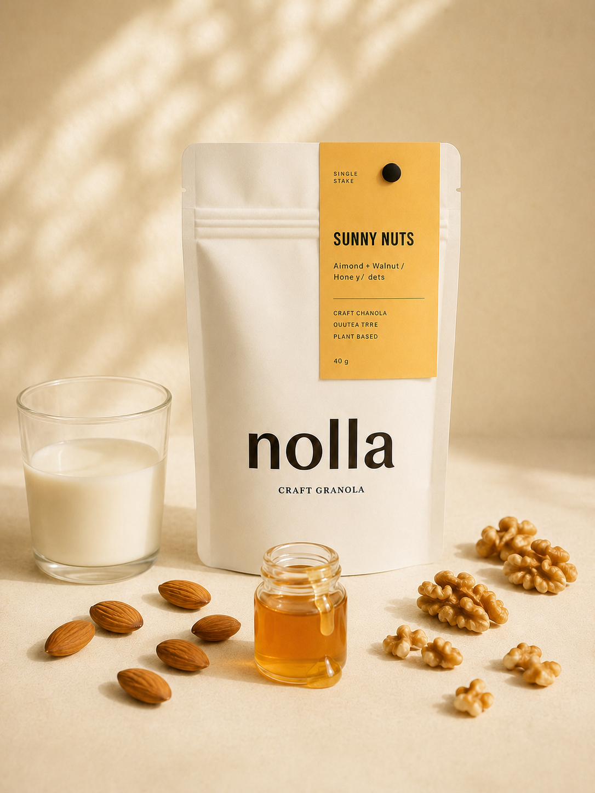
WHY THIS FLAVOR
YOUR ANSWERS
HOW TO ENJOY
7 DAYS BREAKFAST BOX
INSIDE THE BOWL
香ばしいオーツに、ナッツや果実を少しずつ。
食感とやさしい甘みを重ねて、
朝に食べやすい一杯に仕上げています。
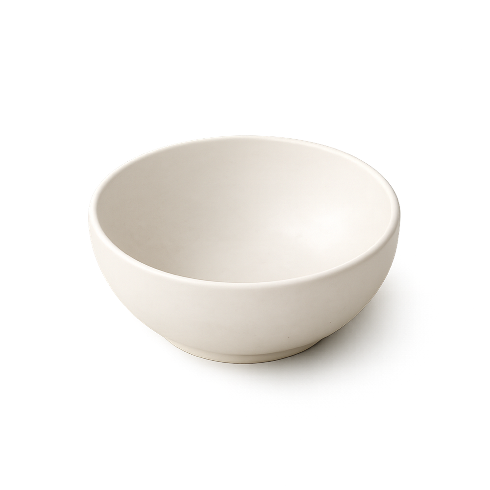
空の白いボウル
01 / OATS
朝に食べやすい軽やかな食感を意識し、
オーツを香ばしく焼き上げます。
02 / NUTS
アーモンドやくるみなど、
噛むたびに香ばしさを感じる素材を重ねます。
03 / FRUITS
ベリーやバナナなどの果実が、
味と食感に小さな変化を加えます。
04 / FLAVOR
ナッツ、ベリー、カカオ。
朝の気分に合わせて、好きな味を選べます。
05 / SWEETNESS
素材の風味を生かしながら、
朝に食べやすい甘さを想定しています。
06 / READY
牛乳や豆乳、ヨーグルトと合わせるだけ。
忙しい朝にも取り入れやすい一杯です。
1食分ずつの個包装だから、
量を測る必要はありません。
好きな飲み物やヨーグルトと合わせて、
その日の朝を始められます。
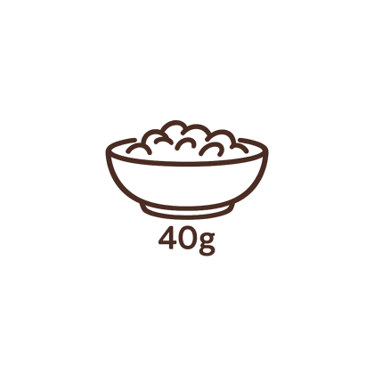
40g 1 SERVING
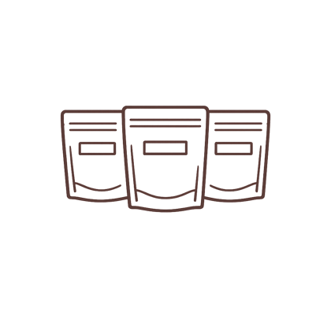
3 FLAVORS CHOOSE YOUR MOOD
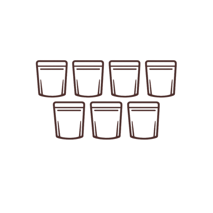
7 BAGS FOR SEVEN MORNINGS
THREE FLAVORS
しっかり食べたい朝も、
軽やかに始めたい朝も、
少し甘いものが欲しい朝も。
その日の気分に合う味を選べます。
1 / 3
HOW TO ENJOY
袋を開けたら、あとはいつもの朝に合わせるだけ。
牛乳や豆乳、ヨーグルト、コーヒーと一緒に、
気分に合う食べ方を楽しめます。
MILK OR SOY
香ばしい食感を楽しみたい朝に。
袋を開けて、好きな飲み物を注ぐだけです。
GOOD MATCH SUNNY NUTS
WITH YOGURT
軽やかに食べたい朝に。
果物を少し添えても楽しめます。
GOOD MATCH BERRY MORNING
WITH COFFEE
少し甘いものが欲しい朝に。
落ち着いた味わいをゆっくり楽しめます。
GOOD MATCH CACAO QUIET
SEVEN MORNINGS
毎日きちんと続けることよりも、
その日の気分に合う朝を選んでみる。
7つの朝を試しながら、自分に合う味を探せます。
1 / 5
TRIAL BOX
好きな味が分からないまま、
大きな袋を買うのは少し不安だから。
nollaは、3つの味を少量ずつ試せる
7日間のセットを用意しました。
TRY THREE FLAVORS
SUNNY NUTS、BERRY MORNING、CACAO QUIETを、一度のセットで食べ比べられます。
SEVEN MORNINGS
続けられるか分からない段階でも、1週間分なら気軽に始められます。
BUY ONCE
一度だけ購入する買い切り商品です。自動的に次の商品が届くことはありません。
nolla CRAFT GRANOLA
1,980円（税込）
3つのフレーバーを7日間試せる、
1食分ずつ個包装されたクラフトグラノーラセットです。
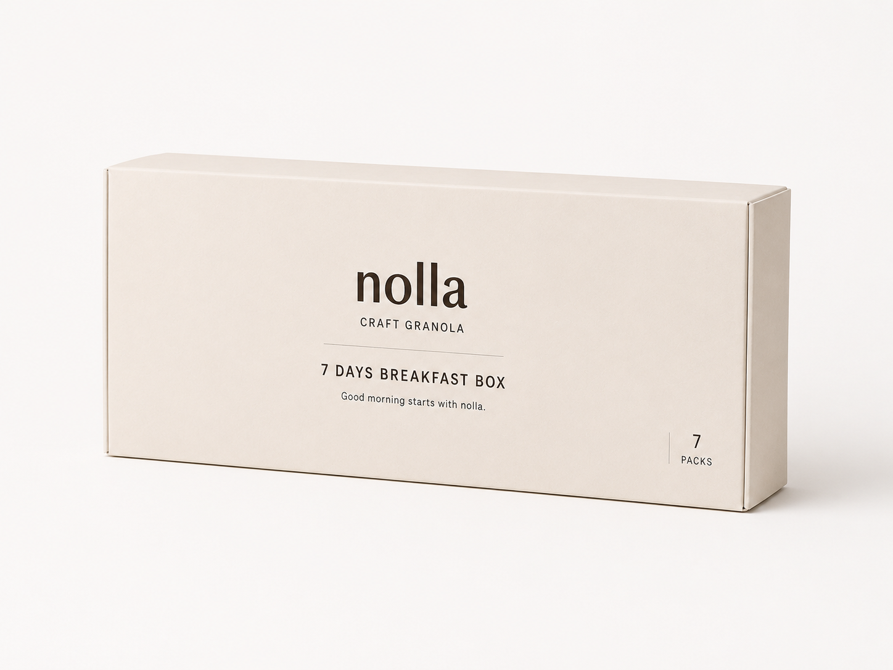
追加の1袋は、購入前に変更できます。
7 DAYS BREAKFAST BOX 1,980円（税込）
1,980円（税込）／本州・四国・九州 送料無料
買い切り・定期購入ではありません
香ばしいナッツと、はちみつのやさしい甘さ。
ベリーの軽やかな酸味と、ほのかな甘さ。
カカオの落ち着いたコクと、バナナの自然な甘さ。
※本商品および表示内容は、ポートフォリオ制作のために設定した架空のものです。
MORNING VOICES
大きく暮らしを変えなくても、朝にひとつ選べるものがあるだけで、いつもの時間が少し楽しみになることがあります。
会社員・31歳
3 FLAVORS
朝はコーヒーだけで済ませることが多かったのですが、個包装なので袋を開けるだけで続けやすかったです。味を選べるのも、朝の小さな楽しみになりました。
営業職・33歳
BERRY MORNING
大袋のグラノーラを余らせたことがあったので、7日分だけ試せるところに惹かれました。BERRY MORNINGはヨーグルトと合わせると重すぎず、出社前にも食べやすかったです。
事務職・30歳
CACAO QUIET
診断ではCACAO QUIETがおすすめでした。甘すぎず、コーヒーと一緒に食べやすかったです。定期購入ではないので、気軽に試せました。
※架空の商品体験をもとにした、ポートフォリオ用のサンプルコメントです。
QUESTIONS
味や量、送料のこと。7日間を始める前に気になることを、まとめました。
3種類とも、素材の風味を生かしたやさしい甘さを想定しています。甘酸っぱい味が好きな方にはBERRY MORNING、落ち着いたコクを楽しみたい方にはCACAO QUIETがおすすめです。
40gは、牛乳や豆乳、ヨーグルトなどと合わせて食べやすい1食分を想定しています。食べる量には個人差があるため、果物や飲み物と組み合わせて調整してください。
定期購入ではありません。7袋入りのセットを、一度だけ購入する買い切り商品です。
購入できます。診断をしない場合は、人気フレーバーのSUNNY NUTSを追加の1袋として設定します。
選べます。診断結果はおすすめとして最初に反映されますが、購入前に追加の1袋を別のフレーバーへ変更できます。
本州・四国・九州は送料無料です。北海道・沖縄への配送は、別途700円がかかります。
商品詳細で、フレーバーごとの原材料とアレルギー情報を表示しています。内容をご確認のうえ、お選びください。
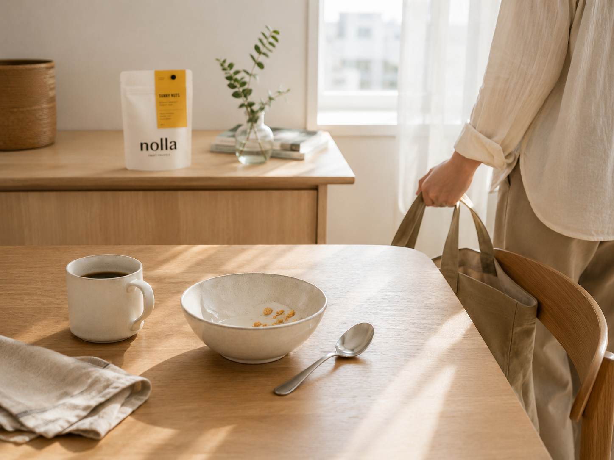
START YOUR MORNING
朝食をきちんと頑張るのではなく、
その日の気分に合う味を選ぶことから。
3つの味を、まずは7日間試してみませんか。
YOUR SEVEN MORNINGS
セット内訳